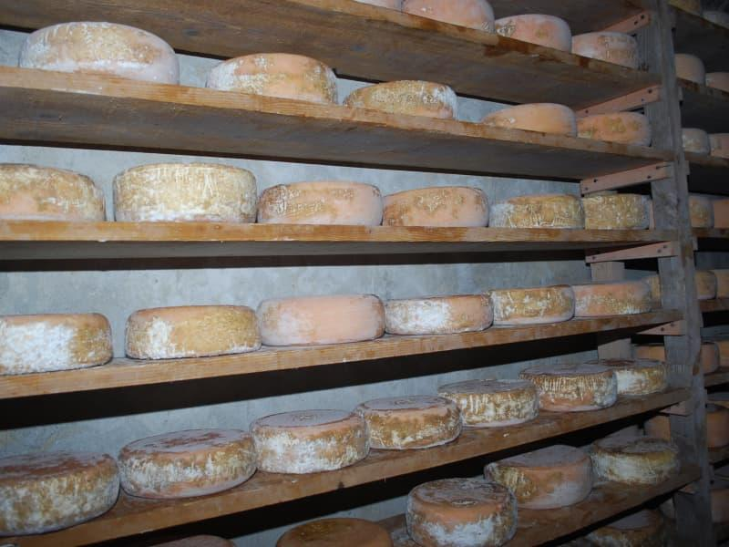
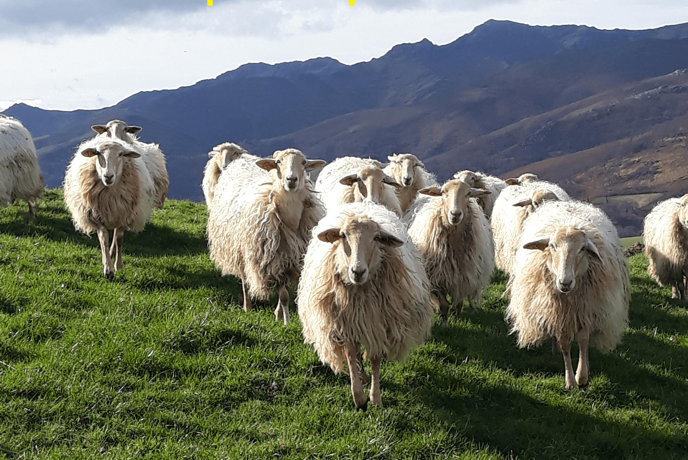

Ossau-Iraty
AOP


⟹ Fromages & Terroir ⟸
L'Ossau-Iraty est l'un des fromages les plus anciens de France, dont la tradition remonte à plus de 3 000 ans dans les vallées pyrénéennes du Pays basque et du Béarn. Fabriqué exclusivement à partir de lait de brebis, il tire son nom de deux territoires emblématiques : la vallée d'Ossau en Béarn et la forêt d'Iraty au Pays basque.

Les premières traces écrites attestant de sa fabrication datent du XIIe siècle, époque à laquelle les moines de l'abbaye de Belloc et les bergers pyrénéens produisaient déjà ce fromage lors de la transhumance estivale. Chaque printemps, les troupeaux de brebis Manech et Basco-Béarnaise montaient vers les estives d'altitude, où les conditions naturelles — herbes grasses, air pur, eau de source — contribuaient à la qualité exceptionnelle du lait.
« Dans les montagnes basques, le fromage de brebis est une institution aussi vieille que les hommes qui les habitent. »
— Tradition orale pyrénéenneL'obtention de l'Appellation d'Origine Protégée (AOP) en 1980 — l'une des premières accordées à un fromage français — a consacré ce savoir-faire ancestral. Le cahier des charges strict impose l'utilisation exclusive de lait de brebis des races Manech Tête Rousse, Manech Tête Noire et Basco-Béarnaise, élevées en plein air dans une aire géographique précisément délimitée.
La meule d'Ossau-Iraty se reconnaît à sa forme cylindrique légèrement bombée, sa croûte naturelle allant du gris clair à l'ocre orangé selon l'affinage, et sa pâte pressée non cuite d'un beau jaune ivoire. Son goût évolue avec le temps : doux et lacté jeune, il devient plus prononcé, avec des notes de noisette et de beurre fondu, après plusieurs mois d'affinage en cave.

Ossau-Iraty fermier : fabriqué à la ferme avec le lait des propres brebis du producteur, il développe une personnalité plus marquée et des arômes plus complexes selon la saison et l'alimentation du troupeau.
Ossau-Iraty au lait cru : non pasteurisé, il offre une palette aromatique plus riche et typée. Réservé aux connaisseurs et aux amateurs de fromages de caractère.
Ossau-Iraty râpé sur des plats : bien affiné, il remplace avantageusement le parmesan sur des pâtes, des risottos ou une piperade. Son fondu est généreux et son goût incomparable.
Ossau-Iraty fondu au four : tranché et passé quelques minutes au gril avec une pointe de piment d'Espelette, il devient un accompagnement festif de salades et de légumes grillés.
L'Ossau-Iraty se déguste directement chez les producteurs fermiers, sur les marchés traditionnels ou dans les fromageries sélectives de la région.
Mauléon-Licharre — Capitale du fromage de brebis basque, avec plusieurs fromageries artisanales ouvertes à la visite.
Tardets-Sorholus — Village au cœur de la Soule, entouré de fermes productrices d'Ossau-Iraty fermier.
Oloron-Sainte-Marie — Porte du Béarn montagnard, avec un marché réputé où les producteurs vendent directement leurs meules.
Espelette — Les producteurs locaux proposent souvent l'Ossau-Iraty en association avec le piment AOP, deux fleurons du terroir basque.
Abbaye de Belloc (Urt) — Les moines bénédictins perpétuent une tradition fromagère millénaire avec leur propre Ossau-Iraty d'abbaye, disponible à la boutique du monastère.